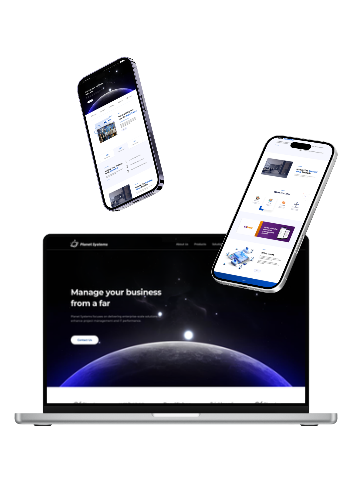
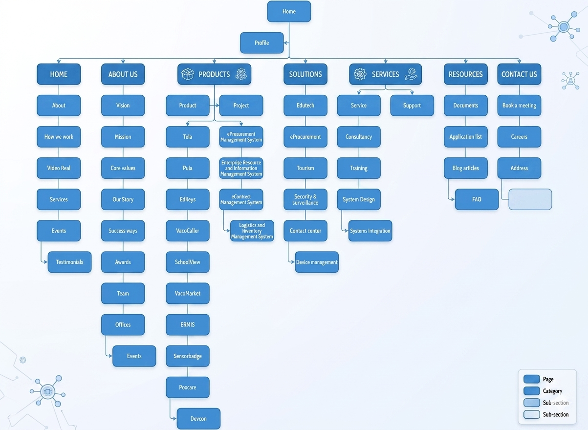
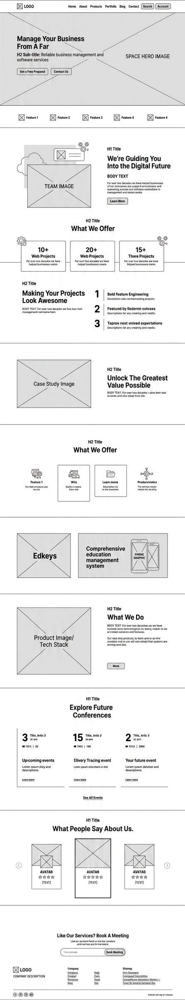
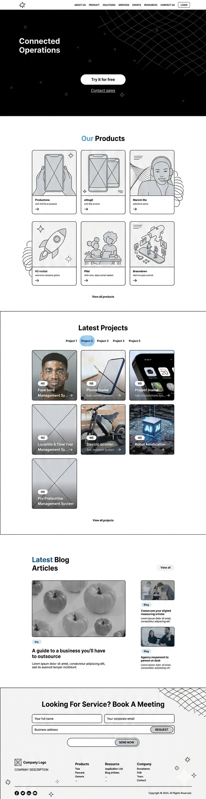
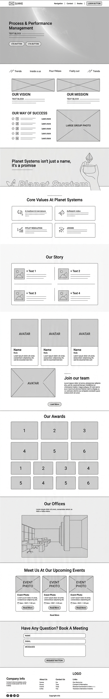
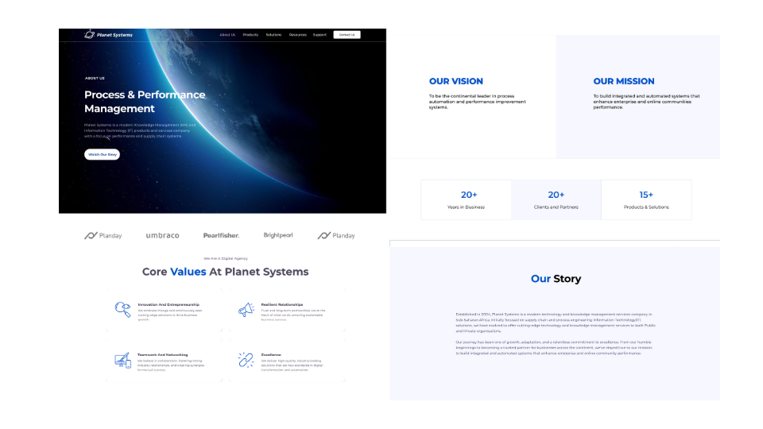
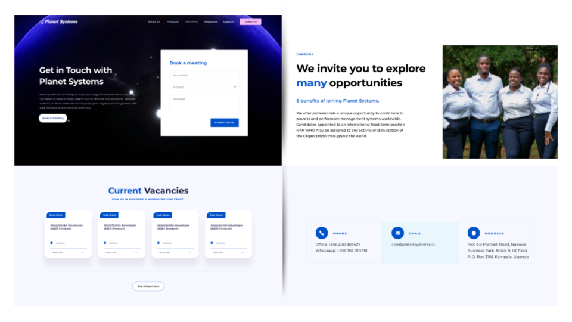
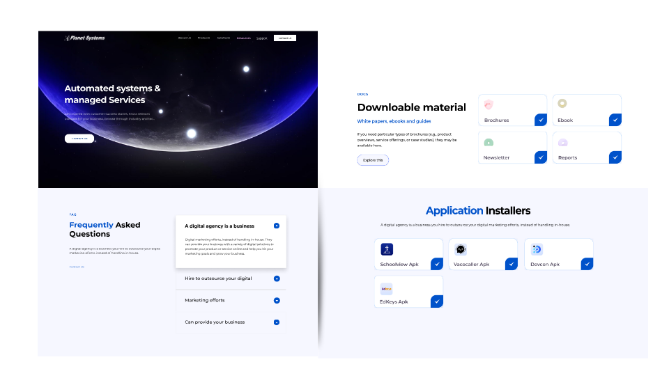
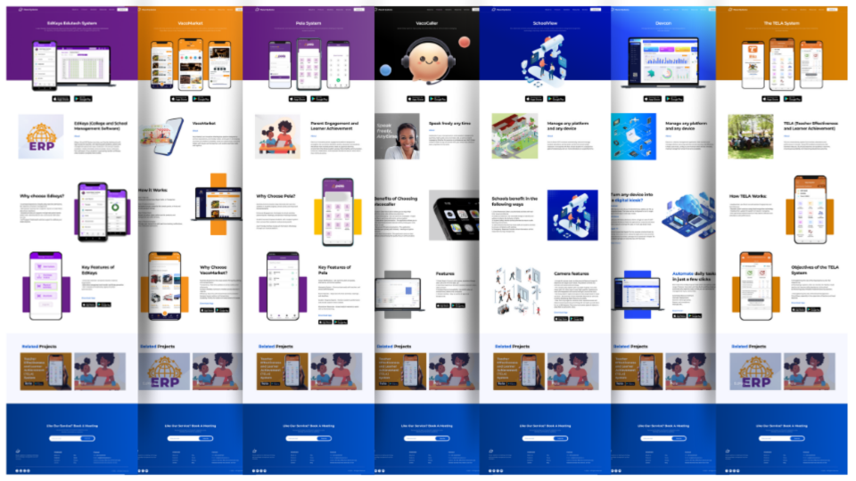

Stakeholder Interviews
Mapped business goals to user needs and identified page-level gaps across products, services, and resources.
UI/UX Product Design Case Study
Planet Systems is a software solutions company in Uganda. We redesigned their legacy website to align with brand identity, improve information architecture, and showcase product value across education, enterprise, and managed services.

The previous website did not reflect Planet Systems' evolving product portfolio or visual identity. Key product lines lacked dedicated pages, navigation was shallow, and information architecture made it difficult for decision-makers to quickly evaluate solutions.
The opportunity was to build a scalable web foundation that positions Planet Systems as a trusted innovation partner while improving clarity, discoverability, and conversion pathways for prospective clients.
Mapped business goals to user needs and identified page-level gaps across products, services, and resources.
Reviewed legacy pages and uncovered inconsistent narratives, missing product proof points, and weak call-to-action placement.
Compared regional and global B2B technology websites to define clear structure, trust-building content patterns, and visual standards.
Needs: Fast clarity on service coverage, implementation support, and credibility.
Pain points: Generic pages, vague product differentiation, hard-to-find contacts.
Needs: Product fit, evidence of outcomes, and implementation confidence.
Pain points: Missing product pages, fragmented information, unclear next steps.








Increase in visits to product-specific pages during the first launch period.
Improvement in average session depth due to clearer navigation architecture.
Growth in meeting and inquiry submissions through prominent, repeated CTAs.
Aligning content structure with user intent was as important as visual modernization. Prioritizing product discoverability and consistent narrative blocks significantly improved how quickly users understood Planet Systems' value.
Next, we plan to run continuous usability testing on key conversion journeys, expand product-level proof (case metrics, testimonials), and incrementally optimize SEO landing pages for high-intent search terms.